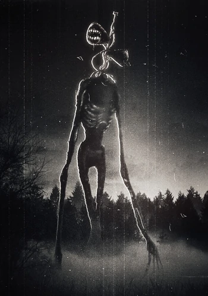

Historia
Siren Head es una de las tantas criaturas creadas por Trevor Henderson.
Es una criatura extraña que posee una gran altura, por la cual es bien reconocido. Se le conoce como un ser hostil y depredador que acecha por la oscuridad de los bosques, y a veces, en algunas urbanidades.
El primer avistamiento ocurrió en 1966, cuando una familia estaba de vacaciones en el desierto de Arizona capturó una imagen de Siren Head. Sin embargo, está implícito que Siren Head ha existido desde el comienzo de la humanidad y la tierra.
Es una criatura extraña que posee una gran altura, por la cual es bien reconocido. Se le conoce como un ser hostil y depredador que acecha por la oscuridad de los bosques, y a veces, en algunas urbanidades.
El primer avistamiento ocurrió en 1966, cuando una familia estaba de vacaciones en el desierto de Arizona capturó una imagen de Siren Head. Sin embargo, está implícito que Siren Head ha existido desde el comienzo de la humanidad y la tierra.

Datos
Nombre: Siren Head, Cabeza de Lámpara, "Eso"
Verso: Trevor Henderson Mythos
Género: Desconocido, probablemente Inaplicable.
Edad: Al menos 200,000 años, probablemente millones de años.
Clasificación: Monstruo, Cadáver Momificado, Depredador, Acechador, Santo Patrón de Desaparecer sin Dejar Rastro, del Miedo Escalofriante, de las Cosas Malas que Vienen.
Verso: Trevor Henderson Mythos
Género: Desconocido, probablemente Inaplicable.
Edad: Al menos 200,000 años, probablemente millones de años.
Clasificación: Monstruo, Cadáver Momificado, Depredador, Acechador, Santo Patrón de Desaparecer sin Dejar Rastro, del Miedo Escalofriante, de las Cosas Malas que Vienen.